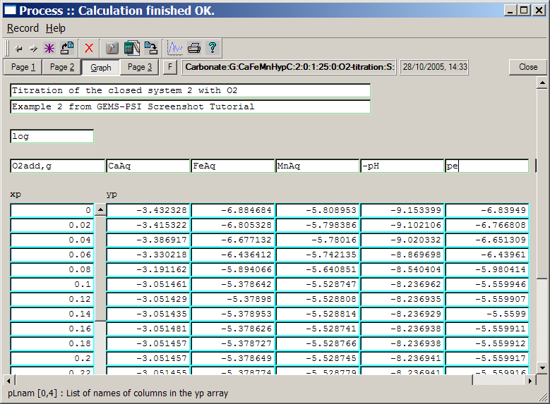
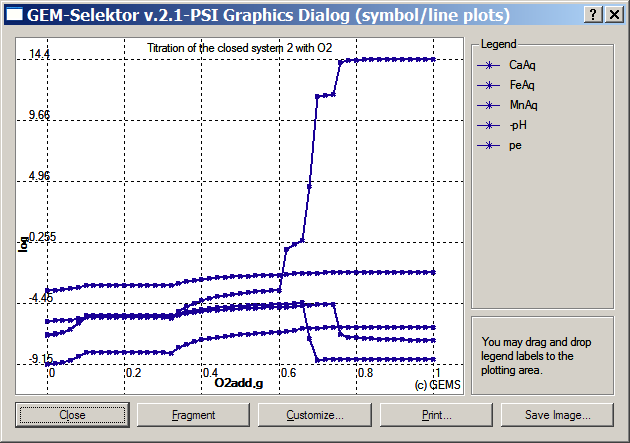
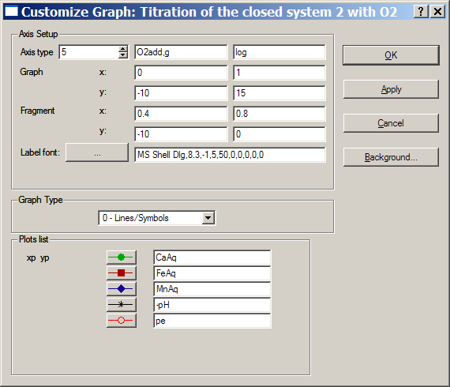
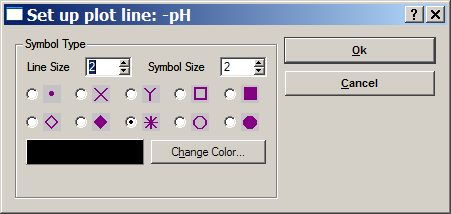
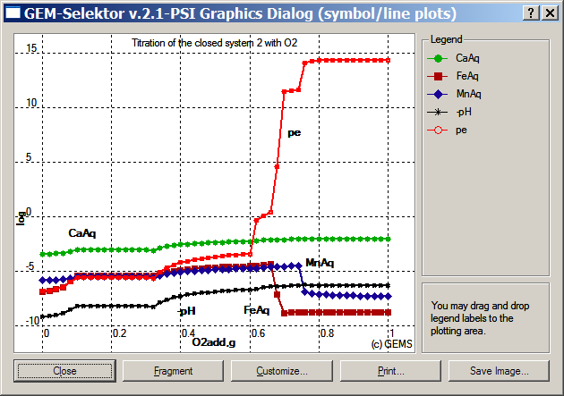
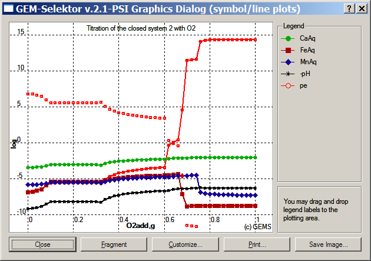
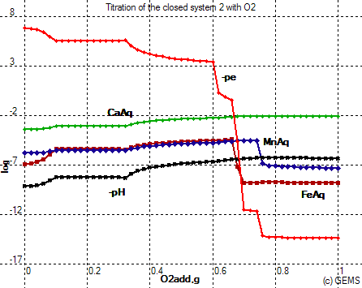
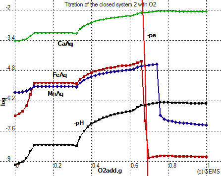

Previous Page Back to Start Page
(25) How
to run
the Process simulator and plot results.
Press the
"Calculate record data"  toolbar button, confirm saving the Process record to database,
and
answer "No" to an appearing question about using the graphics during
calculations.
toolbar button, confirm saving the Process record to database,
and
answer "No" to an appearing question about using the graphics during
calculations.
When the
process
simulation is finished (as indicated on the title line of the Process
window),
switch to the "Graph" page to see a table with sampled data. Enter
names of ordinate axis (pY_Nam field), abscissa axis (pX_Nam), and plot
lines (ordinates, pLnam fields). The plot names order should correspond
to that given in the data sampling script on Page 2. The "Graph"
page should now look like shown below.

Press the "Plot data on graph dialog"  toolbar button when ready. Confirm saving of the Process
database
record, and you will see the graph as shown below.
toolbar button when ready. Confirm saving of the Process
database
record, and you will see the graph as shown below.

Even though the graph already looks not too bad, it is advisable to
adjust
colors and axis scales.
Click on the "Customize" button and get in the following dialog:

Change the
axis
intervals, as well as colours and symbols on the plot lines, as shown
above.
To change the color, click on a button to the left of the legend name
(e.g.
-pH) and get into a line/symbol setup dialog:

There, you can change colors, symbols, symbol size (0 - no symbols) and line size (0 - no line). Click "Ok" when finished to get back to the Customize dialog. There, click on the "Apply" button to see changes on the plot.
Close the Customize dialog
when
ready. Now, you can drag and drop with mouse the legend names onto the
plot
surface. The plot will look like this:

You can also click on the
"Fragment" button to see an enlarged part of the diagram (you will have
to drag-and-drop legend names again).
This graph is not yet
perfect;
it would look nicer if -pe is plotted instead of pe. This is very easy
to
change. Close the graph and switch to Page 2 of the Process window. In
the
pgExpr field, change the last line
to:
yp[J][4] =: 0 - pe;
Now, click on the "Calculate record
data"
 toolbar button to
run the Process simulation again, confirm saving the Process record to
database,
and press "Yes" to use the graphic window during simulation. This time,
newly
calculated results (-pe instead of pe) will be plotted one-by-one as
scattered
symbols. When the simulation run is finished, you will see a plot like
this:
toolbar button to
run the Process simulation again, confirm saving the Process record to
database,
and press "Yes" to use the graphic window during simulation. This time,
newly
calculated results (-pe instead of pe) will be plotted one-by-one as
scattered
symbols. When the simulation run is finished, you will see a plot like
this:

To retain newly calculated results, close the graph dialog and open it
again
(while saving the Process record to database). Then customise the axis
intervals,
drag and drop legend labels on the plot, and press the "Save image"
button
to save the graph as e.g. a PNG graphic file. When you insert that file
into
e.g. a Word document, it will look there as follows:

You can also press the "Fragment" button and produce a plot where the
aqueous
speciation is better seen (customize fragment axis intervals, if
necessary):

The plot above shows abrupt shapes typical for redox transitions. In
order
to understand what causes these shapes, we will have to construct
another
plot showing the appearance and disappearance of solid phases and gas
fugacities
as function of O2 addition.
This can be done by
constructing
a GtDemo data sampler using SysEq records already generated in the
Process
simulation.
You can also "clone" the Process record and easily modify it, as
described
in more detail in the Process module manual.